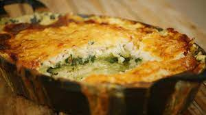

Gratin met wijting en spinazie

Ingredienten
- 500 gram spinazie
- 4 dl melk
- 4 dl room
- 2 tenen knoflook
- enkele takjes tijm
- 4 blaadjes laurier
- 2 steranijsjes
- peper
- zout
- nootmuskaat
- boter
- 400 gram wijting (filet, zonder vel)
- 1 kg aardappel (loskokend)
- 200 gram gemalen kaas
Bereiding
- Was de spinazie en verwijder de harde steeltjes. Laat uitlekken in een vergiet.
- Neem een kookpot en giet er de melk en de room in.
- Voeg de gekneusde gepelde teentjes look toe. Breng het mengsel verder op smaak met tijm en laurier. Kruid met de steranijs, peper van de molen, een snuif zout en versgeraspte nootmuskaat.
- Verwarm het mengsel op een zacht vuur en laat alle kruiden hun smaak afgeven aan de room en de melk (infuseren). Het mengsel mag heet worden, maar laat het niet uitbundig koken.
- Smelt een klont boter in de wokpan. Stoof de spinazie in de boter. Kruid met peper en zout.
- Controleer de wijtingfilets op achtergebleven visgraten. Gebruik een pincet om de graatjes eruit te plukken.
- Doe de gestoofde spinazie in een vergiet en druk er met een vork zoveel mogelijk kookvocht uit. Laat rustig uitlekken. Zo vermijd je een waterige ovenschotel.
- Vet de ovenschaal in met wat boter.
- Verwarm de oven voor tot 180°C.
- Schil de aardappelen en snijd ze vervolgens in dunne plakjes van ongeveer 3 millimeter. Gebruik hiervoor een Chinese of klassieke mandoline of snijd de plakjes zorgvuldig met een scherp aardappelmesje.
- Schik de aardappelschijfjes in de ovenschaal, geschrankt over elkaar net zoals dakpannen. Begin met één laag.
- Verdeel er de helft van de wijtingfilets over. Dit is je tweede laag.
- Bouw opnieuw een laagje aardappelen, met daarbovenop een laag spinazie, en dan weer een laag aardappelen.
- Leg de rest van de vis op de aardappelschijfjes.
- Werk af met een laatste laag aardappelen.
- Zeef het hete mengsel van melk en room. Schenk het over de aardappelschijfjes, de vis en de spinazie tot alles onderstaat.
- Strooi ten slotte een laag gemalen kaas over de bereiding.
- Plaats de schaal in de oven. Laat de aardappelbereiding zo’n 40 à 50 minuten garen, tot er een goudbruin kaaskorstje op ligt. Elke oven is anders, dus controleer de gaarheid: prik daarvoor met een mesje in de schijfjes aardappel.
- Serveer de gratin met wijting en spinazie uit de oven.